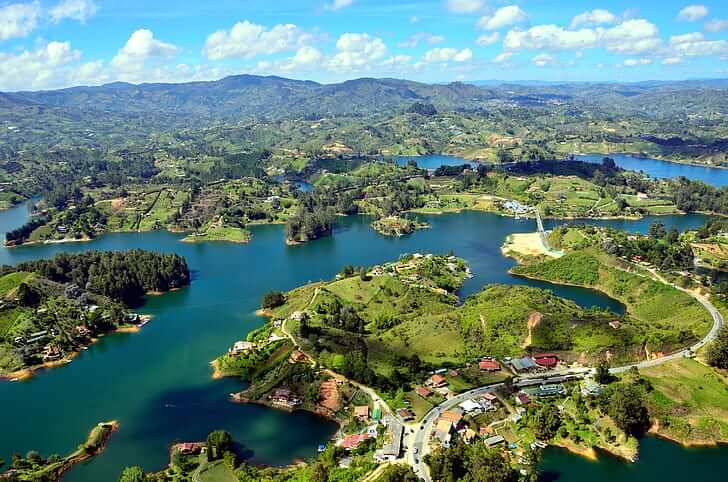
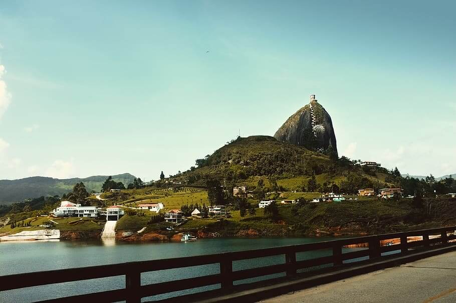
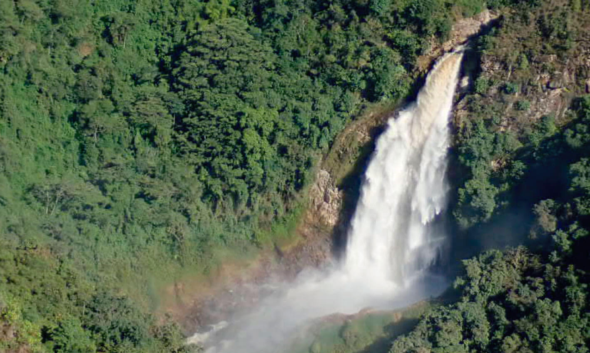
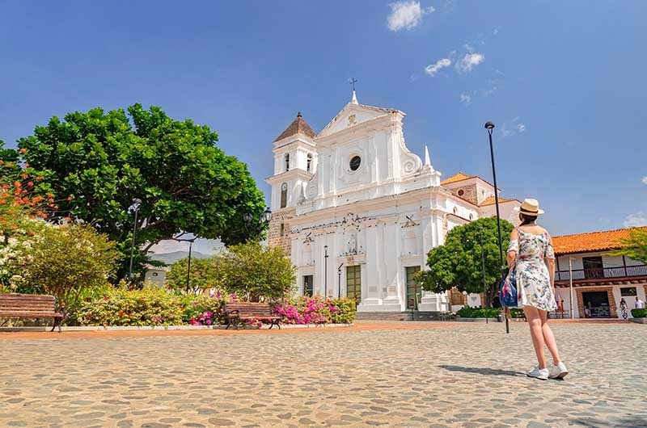
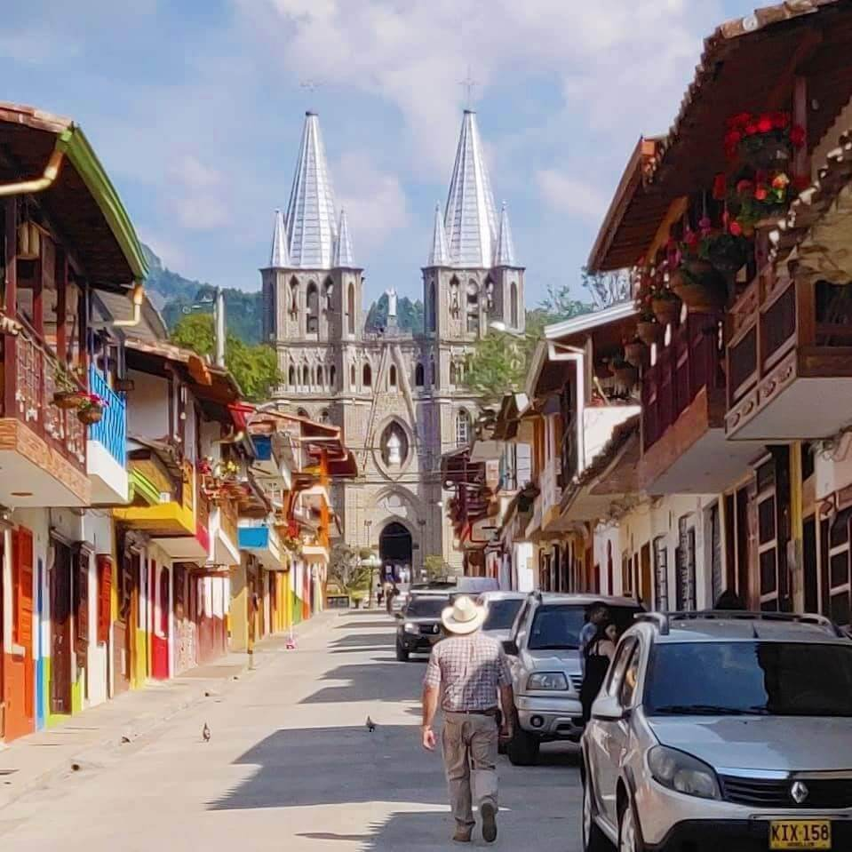
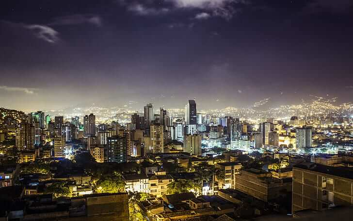

Guatape - A colorful town by the lake

Piedra del Peñol - The famous monolith close to Medellin

El Salto del Buey - Majestic waterfall close to Medellin

Santa Fe de Antioquia - Colonial heritage with beautiful views

Jardin - Beautiful town in the mountains surrounded by flowers

Medellin - The city of eternal spring